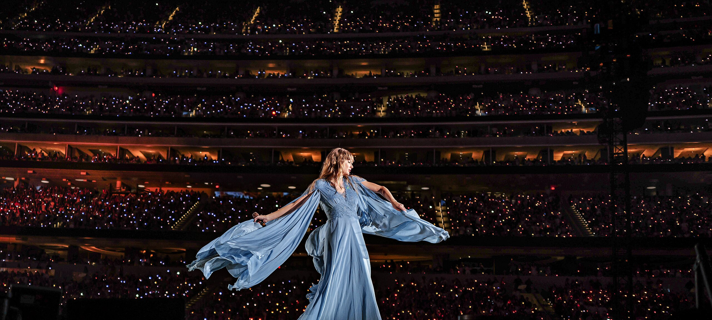
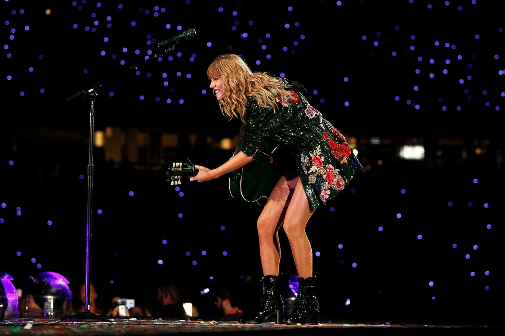

The Eras Tour.
This is the last tour she did, here she goes trough every single era of her walk in music .

Reputation Stadium Tour.
The Reputation Stadium Tour marked Taylor Swift’s powerful return to music after a time away from the spotlight. Through bold performances and stunning visuals, she addressed the criticism and came back stronger than ever .

1989 Tour.
The 1989 World Tour accompanied Taylor Swift’s full transition into pop music. With vibrant visuals, high-energy performances, and surprise guest appearances, the tour solidified her status as a global pop icon..